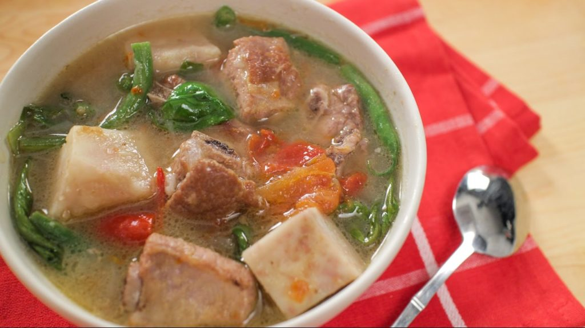

Sinigang Recipe

Description
Sinigang is a Filipino soup or stew characterized by its sour and savory taste.
It is most often associated with tamarind (Filipino: sampalok), although it can use other sour fruits and leaves as the souring agent.
It is one of the more popular dishes in Filipino cuisine.
Ingredients
- 1 tablespoon vegetable oil
- 1 small onion, chopped
- 1 teaspoon salt
- 1 (1/2 inch) piece fresh ginger, chopped
- 2 plum tomatoes, cut into 1/2-inch dice
- 1 pound bone-in pork chops
- 4 cups water, more if needed
- 1 (1.41 ounce) package tamarind soup base (such as Knorr®)
- ½ pound fresh green beans, trimmed
Steps
- Heat vegetable oil in a skillet over medium heat. Add onion; cook and stir until softened and translucent, about 5 minutes. Season with salt.
- Stir in ginger, tomatoes, and pork chops. Cover and reduce heat to medium-low. Turn the pork occasionally, until browned.
- Pour in water and tamarind soup base. Bring to a boil, then reduce heat and simmer until the pork is tender and cooked through, about 30 minutes.
- Stir in green beans and cook until tender.
- Serve on its own or with rice, enjoy!
Back to recipes page